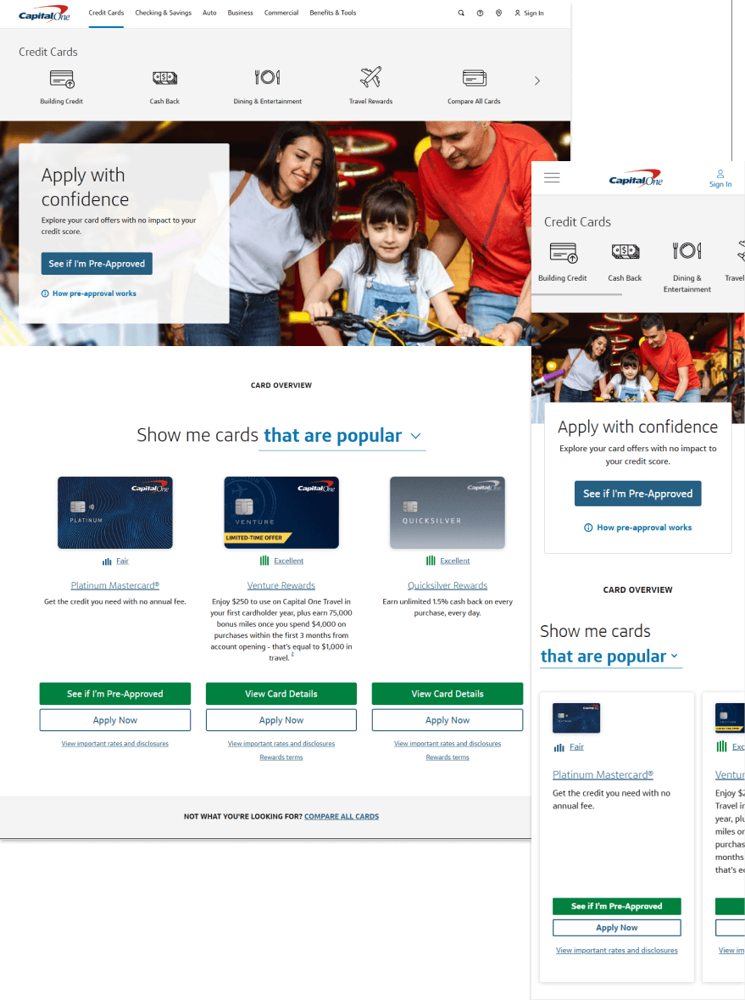

A redesign of the Capital One credit card homepage that took a 95%-ignored dropdown and turned it into the primary engagement surface: +4.7% new accounts booked and +$14.7M annualized revenue.

The card-category dropdown component on the homepage had ~95% non-engagement. Users lacked enough product knowledge to move forward with an application, and competitors were serving better browsing experiences with fewer required interactions, surfacing categories directly instead of hiding them behind a two-tap dropdown.
The opportunity: if we could lift new account bookings by 5%, the revenue math worked out to roughly $14M annualized.
Two audits framed the work: a visual design audit flagging alignment issues in CTAs, and a communication design audit focused on visual signifiers, checking what users thought was clickable versus what actually was.
Competitors collapsed the same job-to-be-done into a single tap (a button or link) where Capital One required two (open the dropdown, then select). That gap defined the solution space.
I produced 10+ rapid variant designs, including a ghost-button prototype for market testing. Eight of them ran as live experiments on the Capital One site.
Three changes carried the lift:
The dropdown itself was retained. The fix was framing and signifiers, not component-level replacement.
+4.7% new accounts booked. +$14.7M annualized revenue. The design has remained live as of 2025. You can verify it on capitalone.com/credit-cards.